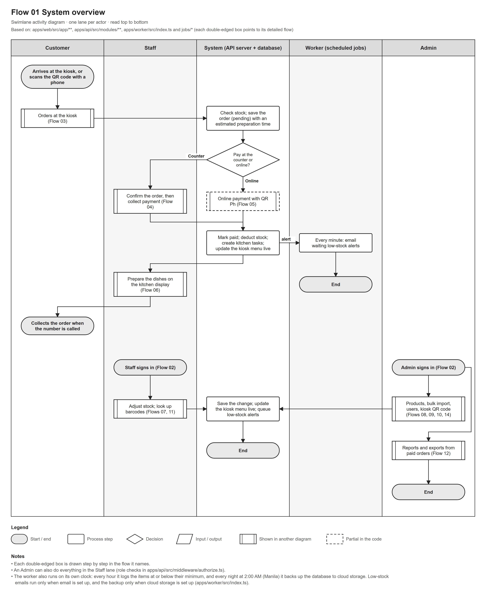
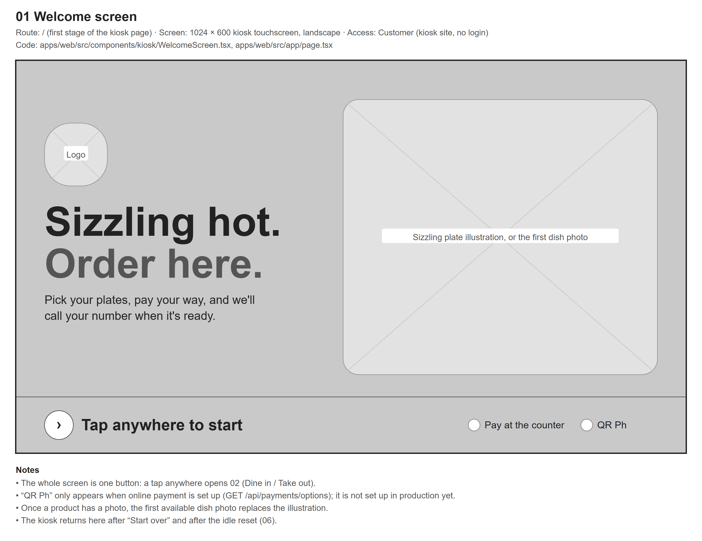
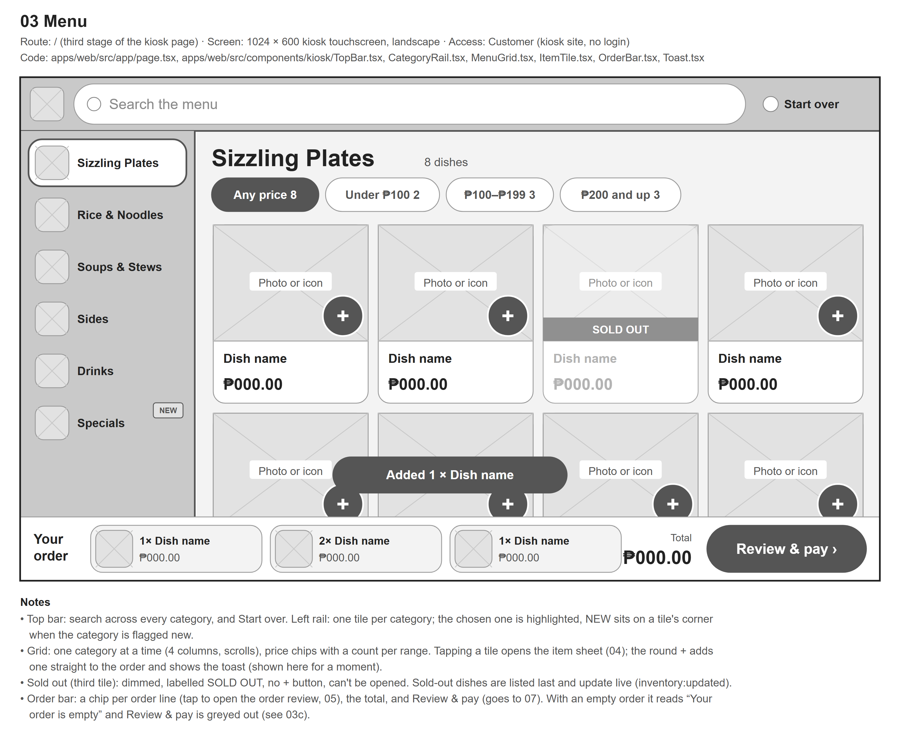
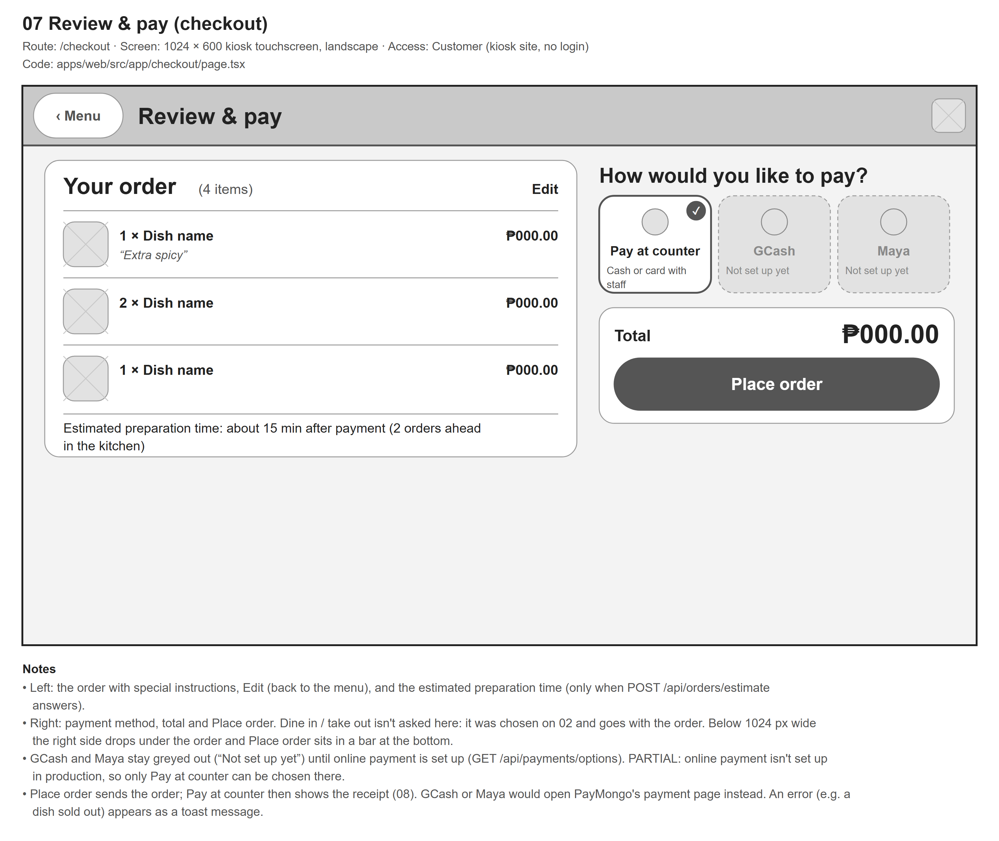
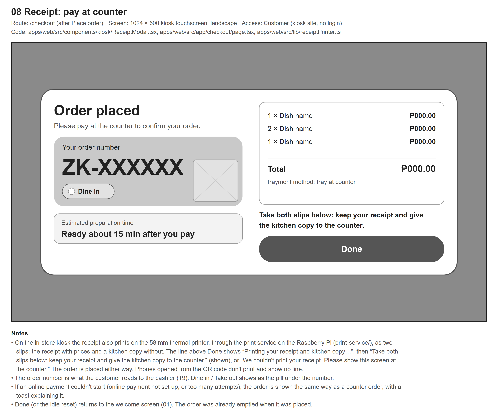
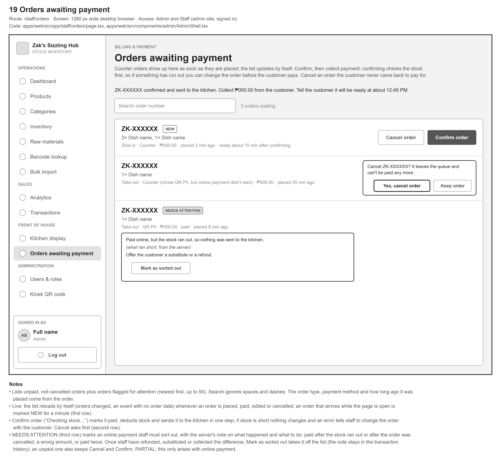
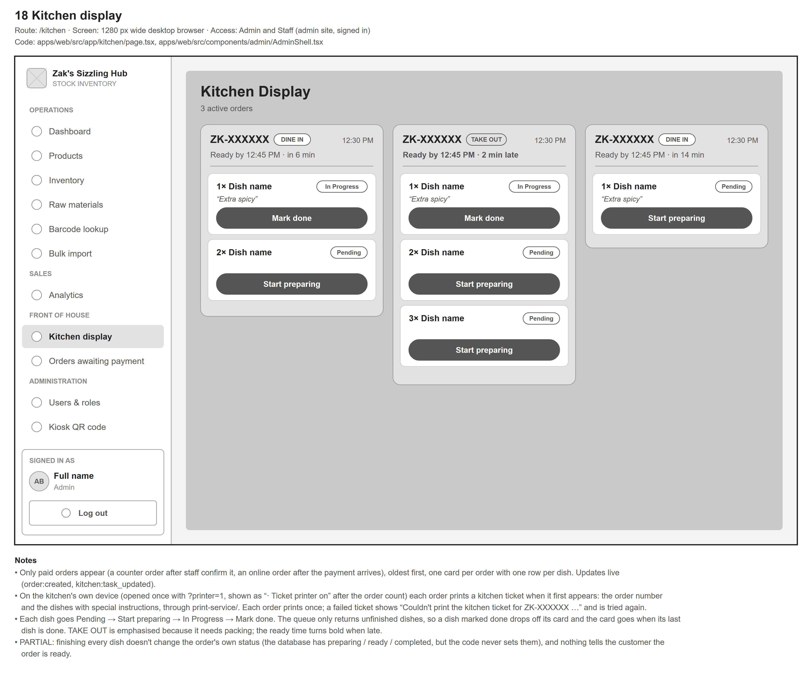
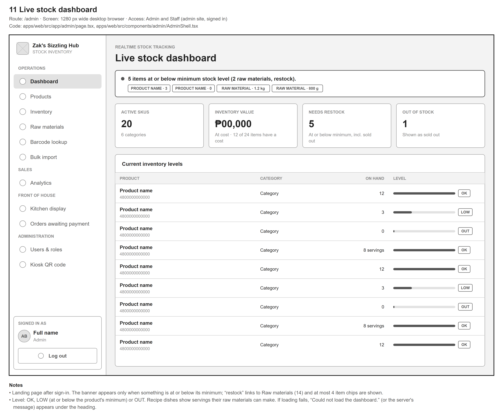
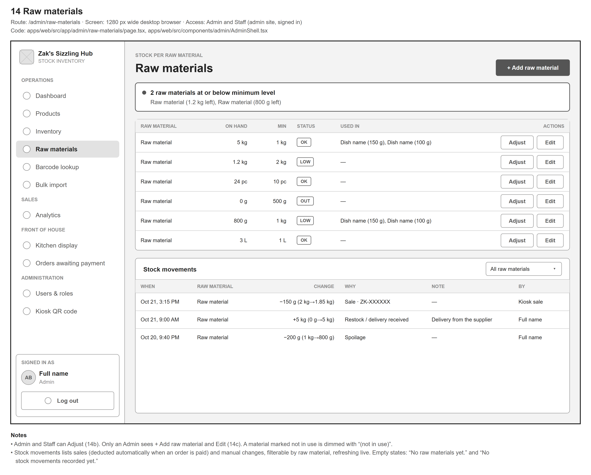
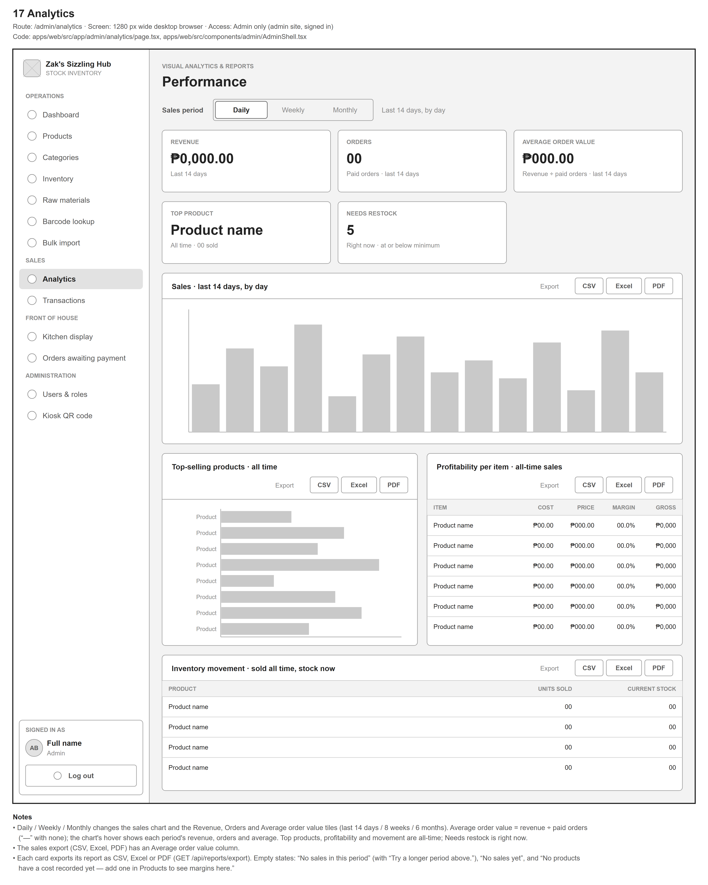

| Proponents | [NAMES] |
| Adviser | [ADVISER NAME] |
| School / Program | [SCHOOL, PROGRAM] |
| Report date | [DATE] |
The system is a web-based self-service ordering kiosk with integrated real-time stock inventory and transaction management for Zak's Sizzling Hub, a sizzling-plate restaurant. Customers order on an in-store touchscreen kiosk (a Raspberry Pi with a 1024 × 600 display) or on their own phones by scanning a QR code. They browse the menu by category, search or filter by price, add dishes with special instructions, choose dine in or take out, and pay at the counter (online payment through QR Ph is implemented but not yet live). Each order receives a unique order number and an estimated preparation time. On the in-store kiosk the receipt is printed on a thermal printer, and a second printer in the kitchen prints a ticket for each paid order.
Staff use a back office on a separate address to confirm counter payments, follow orders on a kitchen display that updates in real time, adjust stock with a recorded reason, and look up products by barcode. When an order is paid the system deducts stock automatically, either as units or as raw materials according to each dish's recipe, and every open kiosk updates its sold-out items without refreshing. The Administrator additionally manages products, prices, costs and photos, imports products in bulk from CSV or Excel files, views sales analytics with CSV, Excel and PDF export, manages user accounts and roles, and prints the kiosk QR code.
A background worker checks stock levels every hour, sends low-stock e-mail alerts when e-mail is configured, and backs up the database every night to off-site cloud storage. The system is deployed on Railway as separate customer and staff web addresses, an API service, a worker and a managed PostgreSQL database. This report describes only what is present in the source code; every status in Section 4 cites the files that implement it.
| Role | What the role can do in the current code |
|---|---|
| Customer (no sign-in) | Order at the kiosk or on a phone: browse, search, filter by price, add dishes with instructions, choose dine in or take out, pay at the counter, and see (and on the kiosk, print) the receipt. |
| Staff | Dashboard without cost figures, inventory and raw-material adjustments, barcode lookup, kitchen display with printed kitchen tickets, and confirming or cancelling counter orders. |
| Administrator | Everything Staff can do, plus product management (prices, costs, photos, recipes), bulk import, raw-material set-up, analytics and exports, user and role management, and the kiosk QR code. |
Access is enforced by the API on every route (apps/api/src/middleware/authorize.ts); the web pages apply the same rules so that users only see what they may use. Figure 1 on the next page shows how the users and the parts of the system work together.

| Layer | Technology | Use in the system |
|---|---|---|
| Language | TypeScript | All application code; one repository with npm workspaces. |
| Web application | Next.js 16, React 19, Tailwind CSS 4 | Customer kiosk, back office and kitchen display (apps/web). |
| API server | Node.js, Express 4, Zod | REST API with validation and role checks (apps/api). |
| Real-time updates | Socket.IO | Stock, new-order and kitchen status events. |
| Database | PostgreSQL 18, Prisma 6 | Schema, migrations and queries (apps/api/prisma). |
| Authentication | JSON Web Tokens, bcrypt | Staff sign-in, anonymous kiosk sessions, password hashing. |
| Background jobs | node-cron, Nodemailer / Resend, pg_dump | Low-stock checks and e-mails, nightly backups (apps/worker). |
| File handling | ExcelJS, PDFKit, qrcode | Excel import and export, PDF reports, kiosk QR code. |
| Payments | PayMongo | QR Ph online payment, scanned with any bank or e-wallet app (implemented, not yet live). |
| Storage | Cloudflare R2 | Off-site database backups. |
| Hosting | Railway | Customer and staff web addresses, API, worker, PostgreSQL. |
| Kiosk and kitchen hardware | Raspberry Pi, 1024 × 600 touchscreen, two RP21UB-Y 58 mm thermal printers | In-store kiosk and kitchen; a print service (Node.js, print-service) on the device next to each printer prints the customer receipt and the kitchen ticket. |
| Testing | Vitest, Supertest | Automated unit, integration and security tests (apps/api/test). |
The features assessed are those described in the manuscript, grouped into sixteen modules as in the progress report of 25 September 2026, together with two planned activities identified by the proponents (testing PayMongo with real keys and structured testing on the physical kiosk) and one feature added by the proponents (kitchen ticket printing). Four offline and Progressive Web App features were removed from the manuscript by the adviser's decision and are listed but not scored.
| Status | Features | Meaning |
|---|---|---|
| Completed | 73 | Works end to end in the code (interface, logic and data saving where relevant). |
| Partial | 4 | Started; the missing parts are stated. |
| Not yet started | 4 | No implementation in the code. |
| Removed from scope | 4 | Removed from the manuscript by adviser decision; not scored. |
| Total | 85 | 81 scored features |
No feature was found to be a placeholder, that is, a screen or route without real logic behind it.
| Module | Completed | Partial | Not yet started | Removed | Progress |
|---|---|---|---|---|---|
| 1. Kiosk ordering interface | 9 | 1 | 0 | 0 | 95% |
| 2. Checkout and payments | 5 | 1 | 2 | 0 | 69% |
| 3. Front-desk order handling | 5 | 0 | 0 | 0 | 100% |
| 4. Kitchen display system | 5 | 0 | 0 | 0 | 100% |
| 5. Real-time inventory synchronisation | 3 | 0 | 0 | 0 | 100% |
| 6. Product and catalogue management | 6 | 1 | 0 | 0 | 93% |
| 7. Inventory monitoring and stock adjustments | 6 | 0 | 0 | 0 | 100% |
| 8. Analytics, reports and data export | 7 | 0 | 0 | 0 | 100% |
| 9. Authentication, roles and user management | 5 | 0 | 0 | 0 | 100% |
| 10. Security measures | 8 | 0 | 0 | 0 | 100% |
| 11. Background worker and backups | 3 | 0 | 0 | 1 | 100% |
| 12. Offline support (PWA) | 0 | 0 | 0 | 3 | — |
| 13. Hardware integration | 2 | 0 | 0 | 0 | 100% |
| 14. QR code and multi-device access | 2 | 0 | 0 | 0 | 100% |
| 15. Deployment | 3 | 0 | 0 | 0 | 100% |
| 16. Testing and quality assurance | 4 | 1 | 2 | 0 | 64% |
Module progress uses the same scoring as the overall figure. The progress report of 25 September 2026 averaged the sixteen module percentages and included the offline features; the two figures are therefore not directly comparable.
Every feature is listed with its status, a short remark, and the main files that implement it (paths relative to the repository root). A feature is marked Completed only when the interface, the logic and, where relevant, the saving of data are all present in these files.
| Feature | Status | Remarks | Main files |
|---|---|---|---|
| 1. Kiosk ordering interface | |||
| Product catalogue with names, prices and availability | Completed | One category at a time as a grid of tiles; sold-out dishes are dimmed and listed last. | apps/web/src/components/kiosk/MenuGrid.tsxapps/web/src/components/kiosk/ItemTile.tsxapps/api/src/modules/products/routes.ts |
| Live availability updates | Completed | Sold-out status changes on every open kiosk without a page refresh (inventory:updated event). | apps/web/src/hooks/useCatalog.tsapps/api/src/modules/inventory/fulfillment.ts |
| Item details: description, ingredients, allergens, nutrition | Completed | Set in the product form: ingredients, an allergen checklist with suggestions, and nutrition per serving looked up in USDA FoodData Central or calculated from the recipe; the kiosk labels the values as estimates. | apps/web/src/components/kiosk/ProductModal.tsxapps/web/src/components/admin/ProductDetailsFields.tsxapps/api/src/modules/nutrition/calc.ts |
| Category navigation | Completed | Category rail with a picture tile per category. | apps/web/src/components/kiosk/CategoryRail.tsx |
| Keyword search | Completed | Searches dish names across all categories. | apps/web/src/components/kiosk/TopBar.tsxapps/web/src/app/page.tsx |
| Order (cart): add, change quantity, remove, running total | Completed | Saved on the device so a page refresh keeps the order. | apps/web/src/hooks/useCart.tsxapps/web/src/components/kiosk/OrderBar.tsxapps/web/src/components/kiosk/CartDrawer.tsx |
| Special instructions sent to the kitchen | Completed | Category-specific quick options plus a typed note, limited to 140 characters. | apps/web/src/components/kiosk/ProductModal.tsxapps/web/src/lib/instructionChips.tsapps/web/src/app/kitchen/page.tsx |
| Kiosk session and idle-timeout reset | Completed | Warning after 60 s without activity; the order is cleared 20 s later. | apps/web/src/hooks/useIdleTimer.tsapps/web/src/components/kiosk/IdleTimeoutOverlay.tsx |
| Product images | Completed | Uploaded by the Administrator, reduced in size in the browser, stored in the database. | apps/web/src/components/admin/ProductForm.tsxapps/web/src/lib/imageResize.tsapps/api/src/modules/products/image.ts |
| Filter by price range or popularity | Partial | Price-range filter implemented; no popularity filter. | apps/web/src/components/kiosk/MenuGrid.tsxapps/web/src/lib/priceRanges.ts |
| 2. Checkout and payments | |||
| Payment method selection (counter, QR Ph) | Completed | QR Ph is shown as unavailable until online payment is configured. | apps/web/src/app/checkout/page.tsxapps/api/src/modules/payments/routes.ts |
| Pay-at-counter order placement | Completed | The server re-checks availability and stock before accepting the order. | apps/web/src/app/checkout/page.tsxapps/api/src/modules/orders/service.ts |
| Online payment through PayMongo (QR Ph) | Partial | QR Ph is the one online method; it replaced GCash and Maya on 26 October 2026. The kiosk shows the QR Ph code on its own screen, checks for the payment every 3 seconds, and also accepts PayMongo's signed webhook; covered by automated tests with PayMongo simulated. Not yet run with PayMongo keys; production has none yet. | apps/api/src/modules/payments/service.tsapps/api/src/lib/paymongo.tsapps/web/src/components/kiosk/QrPaymentScreen.tsx |
| Digital receipt with a unique order number | Completed | Order number, order type, items, total, payment method and estimated preparation time. | apps/web/src/components/kiosk/ReceiptModal.tsxapps/api/src/modules/orders/service.ts |
| Estimated preparation time | Completed | Longest dish + 1 min per extra serving + 2 min per order already in the kitchen; shown at checkout and on the receipt. | apps/api/src/modules/orders/prepTime.tsapps/web/src/app/checkout/page.tsx |
| Receipt printing | Completed | The in-store kiosk prints the customer's receipt (restaurant name, order number, order type, items with prices, total, paid or pay at the counter, ready time) on its 58 mm thermal printer through the print service on the Raspberry Pi. Verified on the physical kiosk on 27 October 2026. | apps/web/src/lib/receiptPrinter.tsapps/web/src/app/checkout/page.tsxprint-service/server.js |
| QR-code payment option (manuscript wireframe) | Not yet started | Not present in the code. | — |
| Testing of PayMongo with sandbox and live keys | Not yet started | Planned. Requires PayMongo keys and the client's approval. | — |
| 3. Front-desk order handling | |||
| List of orders awaiting payment | Completed | Unpaid orders and paid orders flagged with a stock issue; updates live when an order is placed, paid, edited or cancelled. | apps/web/src/app/staff/orders/page.tsxapps/api/src/modules/orders/service.ts |
| Confirm counter payment | Completed | Marks the order paid, deducts stock and sends it to the kitchen in one transaction; a stock shortage rolls everything back. | apps/api/src/modules/payments/service.ts |
| Look up an order by its number | Completed | Typed search field (not a keypad). | apps/web/src/app/staff/orders/page.tsx |
| Transaction history screen | Completed | Administrator only: orders by date with status, payment and order-number filters, totals with the average order value, and each order's timeline. | apps/web/src/app/admin/transactions/page.tsxapps/api/src/modules/orders/service.ts |
| Order status progression and cancellation | Completed | Confirmed, then preparing and ready as the kitchen works, then completed when the kitchen presses Handed over; unpaid orders can be cancelled. A status board on the counter screen is the ready notice (not on a phone receipt; see 7.1). | apps/api/src/modules/kitchen/service.tsapps/web/src/app/board/page.tsxapps/web/src/app/kitchen/page.tsx |
| 4. Kitchen display system | |||
| Real-time order queue (number, time, items, instructions) | Completed | Oldest first; each dish has its own status. | apps/web/src/app/kitchen/page.tsxapps/api/src/modules/kitchen/service.ts |
| WebSocket push without polling | Completed | order:created and kitchen:task_updated events. | apps/api/src/websocket/index.tsapps/web/src/lib/websocket.ts |
| Status updates with start and completion times | Completed | Pending, In progress, Completed per dish. | apps/api/src/modules/kitchen/service.ts |
| Dine-in / take-out indicator | Completed | Chosen by the customer after the welcome screen; take-out orders are highlighted. | apps/web/src/app/kitchen/page.tsxapps/web/src/components/kiosk/OrderTypeScreen.tsx |
| Kitchen ticket printing | Completed | A second thermal printer at the kitchen display prints a ticket with the order number and dishes (with special instructions) when a paid order reaches the kitchen; each order prints once and a failed ticket is retried. Verified on 27 October 2026. | apps/web/src/app/kitchen/page.tsxapps/web/src/lib/receiptPrinter.tsprint-service/server.js |
| 5. Real-time inventory synchronisation | |||
| Automatic stock deduction when an order is paid | Completed | Atomic deduction; stock never goes below zero. | apps/api/src/modules/inventory/fulfillment.ts |
| Live stock broadcast to kiosks and back office | Completed | inventory:updated event after every change. | apps/api/src/modules/inventory/fulfillment.tsapps/api/src/modules/inventory/service.ts |
| Raw-material (ingredient) deduction by recipe | Completed | Dishes can use a recipe; servings available are computed from raw-material stock. | apps/api/src/modules/raw-materials/service.tsapps/api/src/modules/inventory/fulfillment.tsapps/web/src/app/admin/raw-materials/page.tsx |
| 6. Product and catalogue management | |||
| Create, edit and delete products | Completed | Field validation; deletion is refused for products with order history. | apps/web/src/app/admin/products/page.tsxapps/web/src/components/admin/ProductForm.tsxapps/api/src/modules/products/service.ts |
| Bulk import from CSV, matched by barcode | Completed | Every row is checked first (dry run); import is enabled only when no row has an error. | apps/web/src/app/admin/import/page.tsxapps/api/src/modules/products/bulkImport.ts |
| Downloadable import template | Completed | CSV and Excel templates. | apps/api/src/modules/products/routes.ts |
| Bulk import from Excel files | Completed | The .xlsx file is converted to CSV and goes through the same checks. | apps/api/src/modules/products/xlsxImport.ts |
| Barcode entry by scanner or typing | Completed | Keyboard-style scanners are detected. Not yet tested with a physical scanner. | apps/web/src/hooks/useBarcodeScanner.tsapps/web/src/components/admin/ProductForm.tsx |
| Searchable and filterable admin catalogue | Partial | Search by name, barcode or category and a category filter; no price-range or popularity filter. | apps/web/src/app/admin/products/page.tsx |
| Add or edit categories | Completed | Administrator page: add, rename, emoji icon, NEW badge, reorder the kiosk's category rail, delete when empty; kiosks update live. | apps/web/src/app/admin/categories/page.tsxapps/api/src/modules/categories/service.ts |
| 7. Inventory monitoring and stock adjustments | |||
| Live stock dashboard with level indicators | Completed | Key figures, low-stock banner and stock levels. | apps/web/src/app/admin/page.tsx |
| Minimum stock level per item | Completed | For products and raw materials. | apps/web/src/components/admin/ProductForm.tsxapps/web/src/components/admin/RawMaterialForm.tsx |
| Low-stock list and banner | Completed | Dashboard, Inventory and Raw materials pages. | apps/api/src/modules/inventory/routes.tsapps/web/src/app/admin/inventory/page.tsx |
| Automated low-stock notifications by e-mail | Completed | Completed in code, not configured in production: a database trigger queues an alert and the worker e-mails it, but the production worker has no e-mail key. | apps/api/prisma/migrations/20261013160000_low_stock_alerts/migration.sqlapps/worker/src/jobs/sendLowStockAlerts.tsapps/worker/src/lib/mailer.ts |
| Stock adjustments with a required reason | Completed | Damaged goods and spoilage can only lower stock. | apps/web/src/components/admin/AdjustStockModal.tsxapps/web/src/components/admin/RawMaterialAdjustModal.tsxapps/api/src/modules/inventory/service.ts |
| Adjustment log (who, when, before/after, reason) | Completed | Separate logs for products and raw materials. | apps/web/src/app/admin/inventory/page.tsxapps/web/src/app/admin/raw-materials/page.tsx |
| 8. Analytics, reports and data export | |||
| Daily, weekly and monthly sales summaries | Completed | Last 14 days, 8 weeks or 6 months. | apps/api/src/modules/reports/service.tsapps/web/src/app/admin/analytics/page.tsx |
| Top-selling products | Completed | All-time ranking. | apps/api/src/modules/reports/service.ts |
| Inventory movement | Completed | Units sold against current stock. | apps/api/src/modules/reports/service.ts |
| Profitability per item | Completed | Cost, price, margin and gross profit. | apps/api/src/modules/reports/service.ts |
| Revenue, transaction count and average order value | Completed | Average order value = revenue ÷ paid orders, per period and in the sales export. | apps/web/src/app/admin/analytics/page.tsxapps/api/src/modules/reports/metrics.ts |
| CSV export | Completed | Every report. | apps/api/src/modules/reports/export.ts |
| PDF and Excel export | Completed | Every report. | apps/api/src/modules/reports/export.ts |
| 9. Authentication, roles and user management | |||
| Staff and administrator sign-in | Completed | 15-minute access token, 7-day refresh cookie, background renewal. | apps/api/src/modules/auth/service.tsapps/api/src/lib/jwt.tsapps/web/src/app/login/page.tsx |
| Anonymous kiosk session for customers | Completed | 2-hour token, renewed automatically. | apps/api/src/modules/auth/service.tsapps/web/src/lib/auth.ts |
| Role-based access control (Administrator, Staff, Customer) | Completed | Checked on the server for every API route and on the pages. | apps/api/src/middleware/authorize.tsapps/web/src/components/admin/AdminRouteGuard.tsx |
| User administration | Completed | Create, change role, suspend or reactivate; an administrator cannot demote or suspend their own account. | apps/web/src/app/admin/users/page.tsxapps/api/src/modules/users/service.ts |
| Signed-out visitors kept out of staff pages | Completed | Redirect to sign-in; staff pages do not exist on the customer link. | apps/web/src/components/StaffGuard.tsxapps/web/src/proxy.ts |
| 10. Security measures | |||
| Encrypted transport (HTTPS) | Completed | All deployed services use HTTPS addresses on Railway. | — |
| SQL-injection prevention | Completed | Prisma parameterised queries; the only raw queries are in the backup restore check and use internal table names. | apps/worker/src/jobs/restoreCheck.ts |
| Password hashing and token security | Completed | bcrypt; refresh token in an httpOnly cookie. | apps/api/src/modules/users/service.tsapps/api/src/modules/auth/routes.ts |
| Emailed sign-in code | Completed | After the password, a 6-digit code is emailed through Brevo; it lasts 10 minutes, allows 5 tries and works once. Not yet switched on in production. | apps/api/src/modules/auth/loginCodes.tsapps/api/src/lib/loginMail.ts |
| Input validation layer | Completed | Zod schemas on every module. | apps/api/src/modules/orders/schema.tsapps/api/src/modules/products/schema.ts |
| Security headers and CORS | Completed | helmet; only the kiosk and admin addresses may call the API. | apps/api/src/app.tsapps/api/src/lib/origins.ts |
| Ownership checks and signed payment webhooks | Completed | A kiosk session can read only its own orders; webhook signatures are verified. | apps/api/src/modules/orders/routes.tsapps/api/src/lib/paymongo.ts |
| Rate limiting | Completed | Sign-in, session renewal, order placement, kiosk sessions and payment start. | apps/api/src/middleware/rateLimit.ts |
| 11. Background worker and backups | |||
| Hourly low-stock check | Completed | Logs items at or below their minimum. | apps/worker/src/jobs/lowStockSweep.ts |
| Scheduled database backup | Completed | Nightly at 2:00 AM (Asia/Manila) with pg_dump. | apps/worker/src/jobs/backupDatabase.tsapps/worker/src/index.ts |
| Off-site backup copy | Completed | Uploaded to Cloudflare R2; a restore check job is provided. | apps/worker/src/lib/storage.tsapps/worker/src/jobs/restoreCheck.ts |
| Offline transaction queuing and synchronisation | Removed from scope | Removed from the manuscript by adviser decision. | — |
| 12. Offline support (PWA) | |||
| Installable Progressive Web App | Removed from scope | Removed from the manuscript by adviser decision. | — |
| Offline caching of the menu | Removed from scope | Removed from the manuscript by adviser decision. | — |
| Offline order queue with automatic synchronisation | Removed from scope | Removed from the manuscript by adviser decision. | — |
| 13. Hardware integration | |||
| Barcode scanner input | Completed | Implemented for keyboard-style USB or Bluetooth scanners; not yet tested with a physical scanner. | apps/web/src/hooks/useBarcodeScanner.tsapps/web/src/app/admin/barcode/page.tsx |
| Thermal printers (receipt and kitchen) | Completed | Two RP21UB-Y 58 mm USB printers, one at the kiosk and one at the kitchen display, each driven by the print service in the repository; text is cleaned of printer control characters and only the system's own sites may print. Both verified on 27 October 2026. | print-service/server.jsprint-service/README.md |
| 14. QR code and multi-device access | |||
| Kiosk usable on phones, tablets and desktops | Completed | Responsive layout; the back-office sidebar stays visible at every width. | apps/web/src/app/page.tsxapps/web/src/components/admin/AdminShell.tsx |
| QR code that opens the kiosk | Completed | Generated in the browser; printable poster and PNG download. | apps/web/src/app/admin/kiosk-qr/page.tsx |
| 15. Deployment | |||
| Web application and API on Railway | Completed | Separate customer (kiosk) and staff (admin) addresses. | apps/web/src/proxy.ts |
| Managed PostgreSQL on Railway | Completed | Migrations applied on API start. | apps/api/prisma/schema.prisma |
| Worker running in production | Completed | Builds from its own Dockerfile; cloud backups verified on 15 October 2026. | apps/worker/Dockerfile |
| 16. Testing and quality assurance | |||
| Automated unit tests | Completed | 15 test files. | apps/api/test/unit |
| Automated integration and security tests | Completed | 28 test files, including an access matrix for every API route. | apps/api/test/integration |
| Type-checking | Completed | No type errors in the API, web application or worker. | — |
| Linting | Partial | 10 errors and 5 warnings reported by ESLint in the web application. | — |
| Documentation of test sessions | Completed | The testing document (Automated-Testing-Results) records all 654 test cases over nine sessions; the ninth, on 29 October 2026, added 59. | — |
| Usability evaluation (ISO/IEC 25010) | Not yet started | Questionnaire prepared and approved by the adviser; not yet administered. | — |
| Structured testing on the physical kiosk | Not yet started | Planned. Receipt and kitchen-ticket printing were verified on the physical printers on 27 October 2026, but no structured test has been run and recorded (ordering, printing, idle reset, touch use, scanner). | — |
The completed work covers the full ordering cycle and the back-office tools around it. The figures are low-fidelity wireframes drawn from the current code (docs/diagrams/); each names the files it is based on.
The kiosk opens on a welcome screen and asks once whether the customer will dine in or take out. The menu shows one category at a time, with a category rail, keyword search and price-range chips; sold-out dishes are dimmed and update live. Customers add dishes directly or through an item sheet with quantity, quick instruction options and a note. Checkout shows the order, an estimated preparation time based on the kitchen queue, and the payment choice (Pay at counter, or QR Ph once online payment is set up). Placing the order returns a receipt with a unique order number; with QR Ph the kiosk first shows the payment QR code to scan. Inactivity triggers a warning and then resets the kiosk for the next customer.




The cashier finds the order by its number in Orders awaiting payment and confirms it. Confirmation marks the order paid, deducts the stock and creates kitchen tasks in a single database transaction; if any item has run out, nothing changes and the cashier is told before money is taken. Unpaid orders can be cancelled. Paid orders appear immediately on the kitchen display, where each dish moves from Pending to In progress to Completed, with dine-in and take-out orders distinguished. As an order appears, a ticket with its number and dishes prints on the kitchen printer. The order itself becomes Preparing when its first dish starts and Ready when the last is done; a status board on the screen at the counter then shows its number under Ready for pickup, until the kitchen presses Handed over. The payment queue updates by itself as orders are placed and paid.


Stock is tracked per product (units) or per raw material for dishes made from a recipe; the kiosk shows how many servings the raw materials still allow. Each item has a minimum level, and items at or below it appear on the dashboard and stock pages and are queued for an e-mail alert. Every manual change requires a reason and is logged with the person, the time and the before and after quantities. Products can also be found by scanning or typing their barcode.


The Administrator creates and edits products with validation, photos, preparation times, recipes, ingredients, allergens and nutrition (looked up in USDA FoodData Central or calculated from the recipe), manages the menu's categories, and imports products in bulk from CSV or Excel after a row-by-row check. Analytics show daily, weekly and monthly sales with the average order value, top-selling products, profitability and inventory movement, each exportable as CSV, Excel or PDF, and a transaction history lists every order with its timeline. User accounts can be created, assigned a role, suspended and reactivated. The Administrator also prints a QR code that opens the kiosk on customers' phones. In operation, the worker backs up the database every night to off-site storage, and separate web addresses keep staff pages off the customer link.

Passwords are hashed with bcrypt, staff and administrators confirm each sign-in with a code emailed to them, staff sessions use short-lived tokens, all input is validated, responses carry security headers, only the kiosk and admin addresses may call the API, payment webhooks are verified by signature, and repeated sign-in, order and payment attempts are rate limited. The API and worker are covered by automated unit, integration and security tests (Section 8).
The table lists every feature that is Partial or Not yet started, with what exists and what remains.
| Feature | Status | What is done and what is left |
|---|---|---|
| Filter by price range or popularity 1. Kiosk ordering interface | Partial | Price-range filter implemented; no popularity filter. |
| Online payment through PayMongo (QR Ph) 2. Checkout and payments | Partial | QR Ph is the one online method; it replaced GCash and Maya on 26 October 2026. The kiosk shows the QR Ph code on its own screen, checks for the payment every 3 seconds, and also accepts PayMongo's signed webhook; covered by automated tests with PayMongo simulated. Not yet run with PayMongo keys; production has none yet. |
| QR-code payment option (manuscript wireframe) 2. Checkout and payments | Not yet started | Not present in the code. |
| Testing of PayMongo with sandbox and live keys 2. Checkout and payments | Not yet started | Planned. Requires PayMongo keys and the client's approval. |
| Searchable and filterable admin catalogue 6. Product and catalogue management | Partial | Search by name, barcode or category and a category filter; no price-range or popularity filter. |
| Linting 16. Testing and quality assurance | Partial | 10 errors and 5 warnings reported by ESLint in the web application. |
| Usability evaluation (ISO/IEC 25010) 16. Testing and quality assurance | Not yet started | Questionnaire prepared and approved by the adviser; not yet administered. |
| Structured testing on the physical kiosk 16. Testing and quality assurance | Not yet started | Planned. Receipt and kitchen-ticket printing were verified on the physical printers on 27 October 2026, but no structured test has been run and recorded (ordering, printing, idle reset, touch use, scanner). |
Offline transaction queuing, the installable Progressive Web App, offline caching of the menu, and the offline order queue were removed from the manuscript by the adviser's decision (docs/manuscript-fixes/CHANGES.md, section 1). The system requires an internet connection.
/checkout/success) remains in the code but is no longer reached.npm audit reports 18 advisories in production dependencies (3 critical, 9 high, 6 moderate), all with fixes available. The critical advisory in Next.js concerns next/og, which the system does not use; the others should still be resolved by upgrading.| Activity | Result | Details |
|---|---|---|
| Automated tests (API and worker) | All passed | Run on 29 October 2026: 654 test cases in 44 files; all 654 passed, 0 failed, including the backup tests (run with pg_dump 18), and three more runs with the test files in random order gave the same result. No test is marked as a known defect. |
| Unit tests | 15 files | Token handling, middleware, preparation-time formula, stock fulfilment, CSV and Excel import, report export and the average order value, e-mail content, backup storage, allowed origins, the PayMongo QR Ph requests, nutrition (USDA mapping and calculation from a recipe). |
| Integration and security tests | 28 files | Against a separate test database: an access matrix covering every API route and role, sign-in with emailed codes (simulated Brevo), orders, order status and the status board, the live payment queue, transaction history, categories, nutrition, stock and raw materials, payments including QR Ph (simulated gateway), barcode lookup, rate limiting, malformed input, product images, imports, exports, low-stock alerts and backups. |
| Type-checking | No errors | API, web application and worker. |
| Linting | 10 errors, 5 warnings | Web application (Section 7.2). |
| Test documentation | Complete | The testing document records all 654 test cases over nine sessions; the ninth session (29 October 2026) added 59 test cases, all passed, and no new defect. |
| Web interface | Manual only | Checked in a browser at the kiosk size (1024 × 600) and on desktop; no automated tests. |
| Physical kiosk | Partial | Receipt printing at the kiosk and ticket printing at the kitchen verified on both printers on 27 October 2026; no structured, recorded test yet (ordering, printing, idle reset, touch use, barcode scanner). |
| Online payment | Not yet started | QR Ph never run against PayMongo with sandbox or live keys. |
| Usability (ISO/IEC 25010) | Not yet started | Questionnaire prepared and approved by the adviser; not yet administered. |
The remaining work is listed in the recommended order: security first, then the items the panel is most likely to ask to see, then evaluation, then functional gaps.
LOGIN_CODES=off from the API service.payment.paid webhook, and check that the receipt prints as PAID and the kitchen ticket prints once the payment arrives./board) on the screen at the counter, and have the owner confirm each dish's ingredients, allergens and nutrition (entered on the live site on 28 October 2026 as estimates).